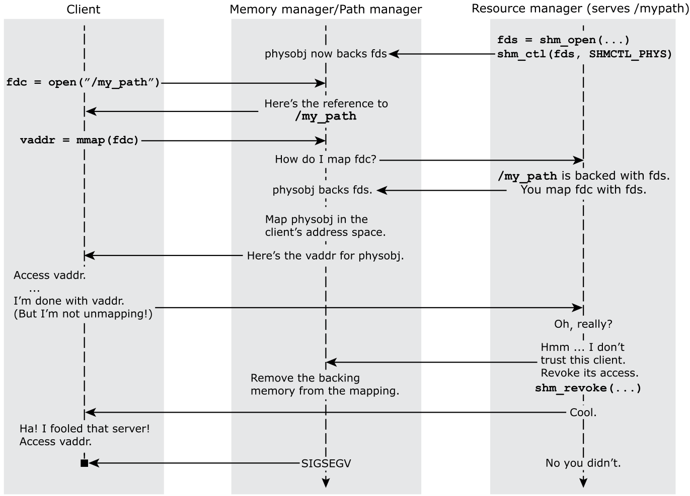

The creator of a shared memory object can revoke another process's mappings of the object.
For example:

The user interface to support this scenario includes:
So that a process can't protect against revocation by forking, revocable object regions are marked as MAP_NOINHERIT; the memory maps for these regions won't exist in the child.
For the steps to follow in using revocable shared memory objects, see
Putting it all together: using handles with anonymous, revocable shared memory objects,
below.
The discussion above focuses on the case where the creator of a shared memory object doesn't trust the other process. What about the opposite case, where the other process doesn't trust the creator? The other process could check the object's flags (see the SHMCTL_GET_FLAGS bit for shm_ctl()) and decide not to use the object, or it could access the mapped memory carefully, using sigsetjmp() or a similar mechanism. There's not much the creator and the other process can do if neither trusts the other.